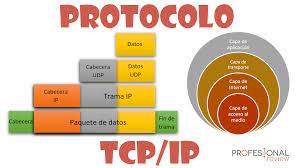

En informática y telecomunicación, un protocolo de comunicaciones es un sistema de reglas que permiten que dos o más entidades (computadoras, teléfonos celulares, etc.) de un sistema de comunicación se comuniquen entre ellas para transmitir información por medio de cualquier tipo de variación de una magnitud física. Se trata de las reglas o el estándar que define la sintaxis, semántica y sincronización de la comunicación, así como también los posibles métodos de recuperación de errores. Los protocolos pueden ser implementados por hardware, por software, o por una combinación de ambos.
También se define como un conjunto de normas que permite la comunicación entre ordenadores, estableciendo la forma de identificación de estos en la red, la forma de transmisión de los datos y la forma en que la información debe procesarse.
Tipos de Protocolos de Comunicacion
Los tipos de Protocolos son:
Protocolo TCP/IP
TCP/IP es un protocolo de enlace de datos que se usa en Internet para que los ordenadores y otros dispositivos envíen y reciban datos. TCP/IP son las siglas en inglés de Transmission Control Protocol/Internet Protocol (protocolo de control de transmisión/protocolo de Internet).

Protocolo HTTP
El protocolo HTTP (Protocolo de transferencia de hipertexto) se basa en www (World Wide Web) que transmite mensajes por la red. Por ejemplo, cuando un usuario ingresa al navegador, la URL transmite los mensajes por HTTP al servidor web que el usuario solicitó. Luego, el servidor web responde y entrega los resultados de los criterios de búsqueda que había solicitado.
Protocolo FTP
El protocolo FTP (protocolo de transferencia de archivos) se usa generalmente para transferir archivos a través de Internet. FTP usa un cliente-servidor para compartir archivos en una computadora remota. La forma en que funciona el FTP es como HTTP para enviar páginas web desde
Protocolo SSH
El protocolo SSH (Secure Socket Shell) proporciona una forma segura de acceder a internet a través de un ordenador remoto. SSH proporciona autenticación y encriptación entre dos computadoras que se conectan a Internet. SSH es bien utilizado por las administraciones de red para administrar sistemas por acceso remoto.
Protocolo DNS
El protocolo DNS (Sistema de nombres de dominio) mantiene un directorio de nombres de dominio traducidos a direcciones IP. El DNS rastrea al usuario para ubicar la dirección web en la dirección IP correspondiente. Por ejemplo, si un usuario ingresa la URL google.com, el servidor web no está leyendo el nombre google.com está leyendo la dirección IP NUMÉRICA que corresponde a google.com (208.65.155.84.).